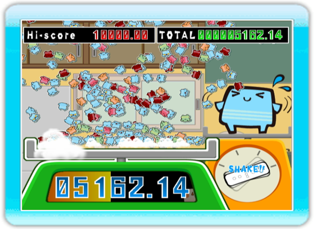
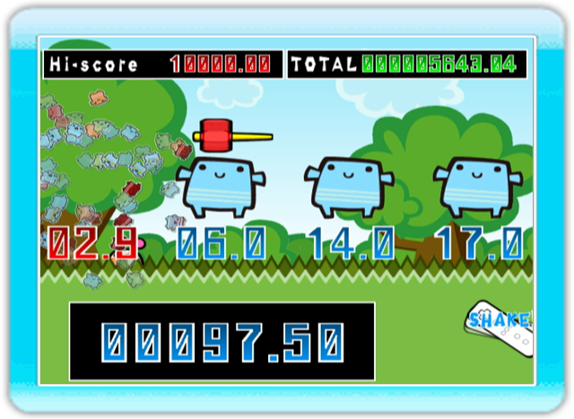
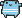
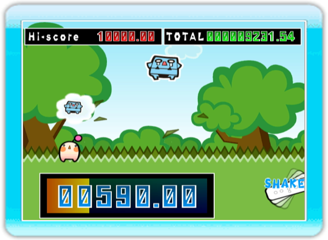
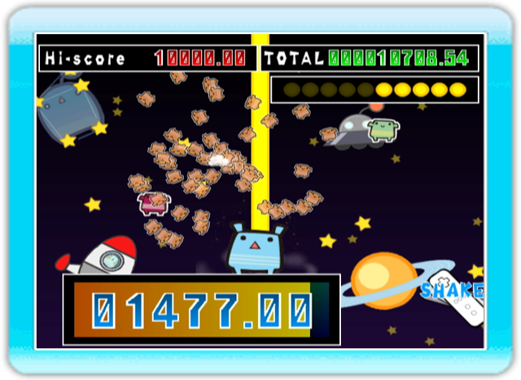
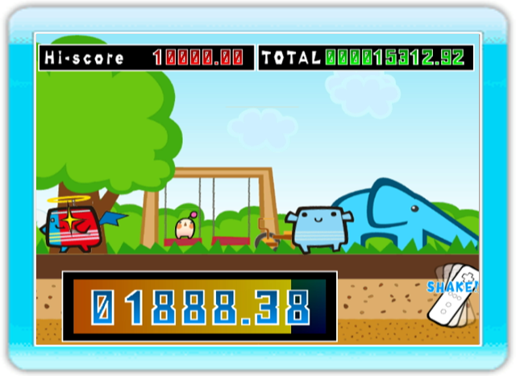
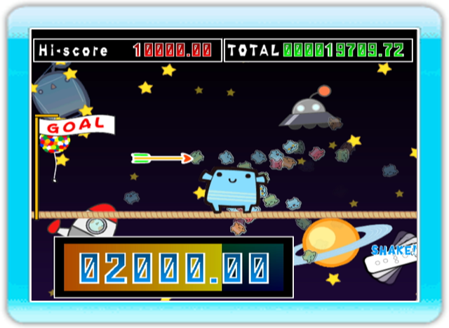

フリフリマスター (Wi-Fiランキング対応)
Wiiリモコンを連続して振る（フリフリする）と、スコアが加算されます。 ３秒間の合計スコアを競います。
の下に出ている秒数をカウントして、ピッタリのタイミングでWiiリモコンを振ります。 正確なタイミングで振れば振るほど高得点になり、4回の合計スコアを競います。
が出す吹き出しと同じが飛び出してきたときだけWiiリモコンを振ります。 正解すると残りタイムが増え、間違ったり見逃したりすると残りタイムが減ります。 たくさん正解すればするほど高得点です。
Wiiリモコンを振ると、上にレーザーを撃ちます。敵が重なるタイミングをうまく狙って、1度にたくさんの敵を倒せば倒すほど高得点です。レーザーは10発しか撃つことができません。
Wiiリモコンを連続して振る（フリフリする）と、に近づいていきます。 が振り返った時に動いている(フリフリしている)とおしまいです。 が振り向くギリギリのタイミングで、進めば進む（フリフリする）ほど高得点です。
フリフリダッシュ2
Wiiリモコンを連続して振る（フリフリする）と、が綱をわたっていきます。 大きく振れば振るほど大きくなって速く移動することができます。 前から飛んでくる矢に当たったり、綱から落ちてしまうとおしまいです。 振る強さで大きさを調整して、矢に当たらないように、綱をわたりきりましょう。 わたるのが早ければ早いほど、高得点です。